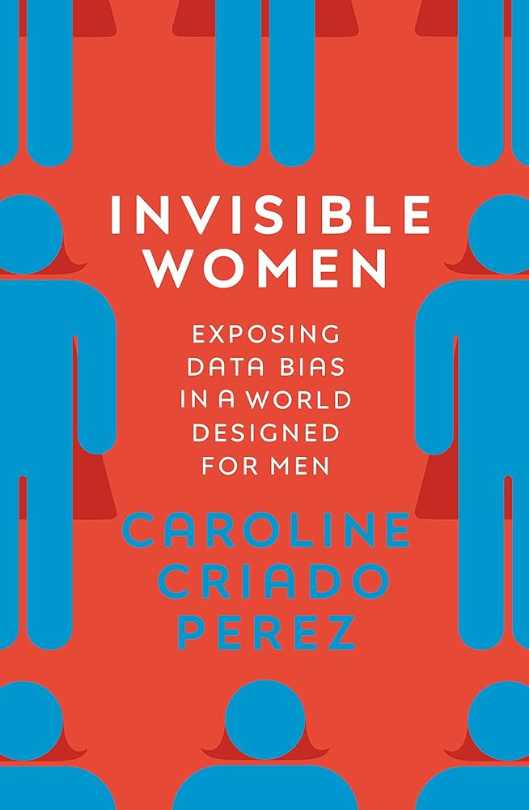

{kind=link}
{kind=link}
| Songs | Jeef | Keef | Total |
|---|---|---|---|
| 0 | 0 | 0 | 0 |
| 1 | 13 | -2 | 11 |
| 2 | 18 | -6 | 12 |
| 3 | 24 | -13 | 11 |
| 4 | 28 | -20 | 8 |
| 5 | 30 | -42 | -12 |
Week 13: SWFLs, Identity Formation, and Discourse Ethics
DSAN 5450: Data Ethics and Policy
Spring 2026, Georgetown University
Wednesday, April 15, 2026
“Controlling for” Everything Besides Race

- Economist assertion: everything is “same” except for [name \(\leadsto\) race]
- Weird part of assertion: only true if the “everything” is stripped of context… But, stripped of context, how would we get [name \(\leadsto\) race] in the first place?
Age Discrimination?


Fair \(\iff\) [\(\Pr(\text{Admit Presley}_{12}) = \Pr(\text{Admit Presley}_{22})\)]?
- Root of issue: [BA Stats, UCLA, 3.7] has no “free-floating” meaning—it’s attached to a person \(\Rightarrow\) affected by/interpreted w.r.t. their “protected” characteristics
…But Wait! Here’s a German Guy!
- Speech Act Theory + Pragmatics \(\leadsto\) “Theory of Communicative Action” (Habermas 1990)
- Whether “globally” or (more realistically) in specific cases, what discursive settings might best enable “fusing of horizons”?
We must distinguish between the social fact that a norm is intersubjectively recognized and its worthiness to be recognized. [ought]
When we discuss moral-practical questions of the form “What ought I to do?” we presuppose that the answers need not be arbitrary; we trust our ability to distinguish in principle between right norms or commands and wrong ones. [Reflective Equilibrium]
[What structure undergirds this ability to distinguish?] What kind(s) of argument, what form(s) of reasoning is it proper for us to accept in support of moral decisions?

But First… Phenomenology
- “Objective” account: Roquentin sits down on a bus seat; “Subjective” account:
I lean my hand on the seat but pull it back hurriedly: it exists. This thing I’m sitting on, leaning my hand on, is called a seat. They made it purposely for people to sit on, they took leather, springs and cloth, they went to work with the idea of making a seat and when they finished, that was what they had made. They carried it here, into this car and the car is now rolling and jolting with its rattling windows, carrying this red thing in its bosom. I murmur: “It’s a seat” […] But the word stays on my lips: it refuses to go and put itself on the thing. It stays what it is, with its red plush, thousands of little red paws in the air, all still, little dead paws…

(Image from “Book Review: Nausea - Jean-Paul Sartre”)
“Cool Theory, I Guess…”
- Less pessimistic result of pessimistic conjecture: Some hope from Fodor-Sperber model (disclaimer: also terrifying Minority Report-style dystopian possibilities)
- “Good luck measuring ideas inside of people’s heads… I’ll be over here measuring real things and doing real data science!” -My innumerable Wile E. Coyote-style opps


Specifically-Chosen Examples


(See Also)

The Cowan Paradox
For many ages to come the old Adam will be so strong in us that everybody will need to do some work if he [sic] is to be contented […] But beyond this, we shall endeavour to spread the bread thin on the butter—to make what work there is still to be done to be as widely shared as possible. Three-hour shifts or a fifteen-hour week may put off the problem for a great while. For three hours a day is quite enough to satisfy the old Adam in most of us!
(John Maynard Keynes, “Economic Possibilities for our Grandchildren”, 1930)

“Cool Theory, I Guess…”
(Brace yourself: Jeff’s Trying-My-Best Fodor-Sperber model of socially-constructed “race” on next few slides… I’m sorry in advance 🙈🙈🙈 Did you know you can italicize emojis)


Opening A Big Can Of Worms
- Social interactions among \(t^e_0\), \(t^e_1\), \(t^e_2\)…

Opening A Big Can Of Worms
- Social interactions among \(t^e_0\), \(t^e_1\), \(t^e_2\)…
- Mediated by external things \(o^e_3\) to \(o^e_8\) (giving rise to patterns of interaction)…
- Each person \(x\) forming their own internal representations \(\widetilde{t^x_0}\), \(\widetilde{t^x_1}\), \(\widetilde{t^x_2}\) of one another based on patterns of interaction, then
- Generalizing to an internal representation of a “type of person” \(\widetilde{t^x_9}\)…

Opening A Big Can Of Worms
- Social interactions among \(t^e_0\), \(t^e_1\), \(t^e_2\)…
- Mediated by external things \(o^e_3\) to \(o^e_8\) (giving rise to patterns of interaction)…
- Each person \(x\) forming their own internal representations \(\widetilde{t^x_0}\), \(\widetilde{t^x_1}\), \(\widetilde{t^x_2}\) of one another based on patterns of interaction, then
- Generalizing to an internal representation of a “type of person” \(\widetilde{t^x_9}\)…
- Which they then externalize as \(t^x_9\).
- \(t^0_9\), \(t^1_9\), \(t^2_9\) “congeal” into a shared external representation \(t_9^e\) via social mechanism (discussion, media, culture, propaganda, parenting, religion, education, …) \(\Rightarrow t^e_9\) “reified” (causal effects on \(t_0\), \(t_1\), \(t_2\))